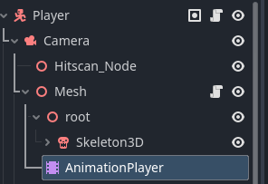

Godot 3.5-4+: Animation Track Loader
Jan 09 2024
Setup
Player Node Structure

The track builder is implemented on the Player node with a script called Player.gd
@onready var animation_player: AnimationPlayer = mesh.get_node("AnimationPlayer")
var path_to_player_node: NodePath = ""
func _ready():
var animation_player_root_node = animation_player.get_parent()
path_to_player_node = animation_player_root_node.get_path_to(self)
setup_pistol_track_events();
func setup_pistol_track_events():
const WIELD_PISTOL_FIRE = "Wield_Pistol_Fire"
const WIELD_PISTOL_RELOAD = "Wield_Pistol_Reload"
var wield_pistol_fire: Animation = animation_player.get_animation(WIELD_PISTOL_FIRE)
var wield_pistol_reload: Animation = animation_player.get_animation(WIELD_PISTOL_RELOAD)
track_builder(wield_pistol_fire, path_to_player_node, wield_pistol_fire.length, track_key_details("ready_to_fire", []))
track_builder(wield_pistol_reload, path_to_player_node, wield_pistol_reload.length, track_key_details("reload_revolver", []))
func track_key_details(method_name: String, method_arguments):
return { "method": method_name, "args": method_arguments, }
func track_builder(animation: Animation, path_to_node: NodePath, timestamp: float, track_details):
var animation_track = animation.add_track(Animation.TYPE_METHOD)
animation.track_set_path(animation_track, path_to_node)
animation.track_insert_key(animation_track, timestamp, track_details)
An example of providing a call method with arguments.
function ready_to_fire(is_ready: bool):
...
# Usage: track_builder(wield_pistol_fire, path_to_player_node, wield_pistol_fire.length, track_key_details("ready_to_fire", [true]))
Below is a track builder script that can be initialized on the root node's script. This example also
has to different source paths to have methods being called on different levels of a node structure.
# Example is from Godot 3.5+
var animation_player: AnimationPlayer = null
var player_node: Character = null
var player_mesh_node: Spatial = null
var path_to_player_node: NodePath = ""
var path_to_player_mesh_node: NodePath = ""
# init called from Player.gd or a ready function of a parent node
func init(animationPlayer: AnimationPlayer, playerNode: Character, playerMeshNode: Spatial):
animation_player = animationPlayer
player_node = playerNode
player_mesh_node = playerMeshNode
set_node_paths()
one_hander_attack_setup()
duel_wield_attack_setup()
func set_node_paths():
var animation_player_root_node = animation_player.get_parent()
path_to_player_node = animation_player_root_node.get_path_to(player_node)
path_to_player_mesh_node = animation_player_root_node.get_path_to(player_mesh_node)
Usage:
func one_hander_attack_first(main_hand: String):
var one_hander_attack_01_animation: Animation = animation_player.get_animation("one_hander_attack_01")
track_builder(one_hander_attack_01_animation, path_to_player_node, .12, track_key_details("frame_based_acceleration", []))
track_builder(one_hander_attack_01_animation, path_to_player_node, .33, track_key_details("play_attack_sound", []))
track_builder(one_hander_attack_01_animation, path_to_player_node, .40, track_key_details("decelerate_frame_based_movement", []))
track_builder(one_hander_attack_01_animation, path_to_player_node, .45, track_key_details("sequence_attack", [main_hand]))
track_builder(one_hander_attack_01_animation, path_to_player_node, .62, track_key_details("melee_attack_chained", [1]))
track_builder(one_hander_attack_01_animation, path_to_player_node, .66, track_key_details("attack_animation_finished", [1]))
track_builder(one_hander_attack_01_animation, path_to_player_mesh_node, .32, track_key_details("show_melee_weapon_trail", ["main_hand"]))
track_builder(one_hander_attack_01_animation, path_to_player_mesh_node, .51, track_key_details("play_melee_weapon_swing_sound", ["main_hand"]))
track_builder(one_hander_attack_01_animation, path_to_player_mesh_node, .60, track_key_details("hide_melee_weapon_trail", ["main_hand"]))
Key Takeaways
Requirements to Adding a Method
-
path_to_player_node - Node path specified from the parent node of the animation player.
-
animation_player.get_animation(animation_name) - The animation from the animation player you wish to add the method too.
-
timestamp - When will the method be called during the animation runtime.
-
animation key - An object with two properties. One for the method name. Called method, another for
the arguments. Called args in an array.
Building the Track
-
animation.add_track(Animation.TYPE_METHOD) - The type of track that will be added to the animation.
-
animation.track_set_path(animation_track, path_to_node) - Sets the track path to the source node.
-
animation.track_insert_key(animation_track, timestamp, track_details) - Where to insert the newly created track on the animation.
The main use case is to bypass the manual approach of adding the method call tracks yourself. This proves to be
tedious, especially for rapid animation prototyping.
My animation workflow is done through Blender using Auto Rig Pro as the export process. To manually export the
animations yourself on a rig. This video
covers it well.
To better understand how to add tracks to an animation player. You can visit the latest documentation for Godot on
the topic here.